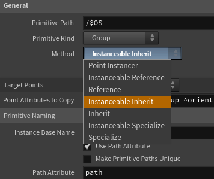
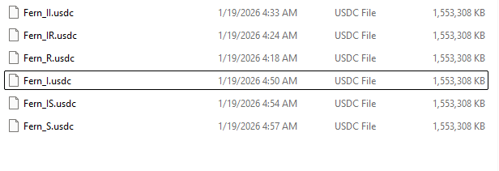
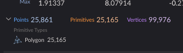
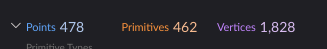
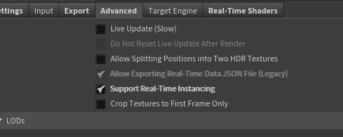
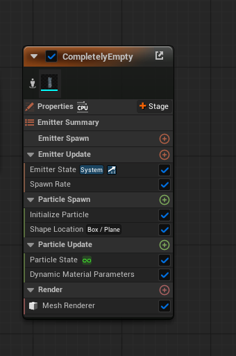

Week2
VAT vs USD Instancing Test
Jan 14
HAVE COMPLETED:
TO-DO LIST:
-
Last week, I tested two different pipelines (USD and VAT) to transfer Yichen’s fern simulation from Houdini to Unreal
-
Try VAT Instancing in Houdini and Unreal
-
Try a different method of Instancer in Houdini and test its performance in Unreal
-
Try animated USD Instancing in Unreal
USD INSTANCING IN HOUDINI:
USD has two types of instanceable primitives and point instancing.
Point instancing: Try to test different methods of point instencing. I have 15 ferns to test the file size.


Point Instancer: The ferns doesn't have animation in Unreal.
Instanceable Reference: It worked
Reference: It worked
Instanceable Inherit: It worked
Inherit: It worked
Instanceable Specialize: It worked
Specialize: It worked

Result： All of them have similar performance and same file size.
USD INSTANCING IN UNREAL:
After discussing with Danci and doing further research, we found that animated USD is not supported for instancing in Unreal.
VAT (Debug)
I’m going to test the formula to check whether VAT will work: (frame_count × point_count) / texture_size, and make sure it doesn’t exceed 9000. I reduced the fern’s hair cards, and the mesh is now 25,861 polygons. Based on the formula, the result is 757.6, so it rendered quickly and exported successfully. I think using an opacity texture on low-poly geometry could work well.

Problem:
When I imported the entire fern into Unreal, it looked glitchy and the leaves were flickering, as I mentioned last week. To investigate the issue, I decided to isolate the leaves. I first tested a single leaf to debug which parts might be causing the problem.
I tried different subdivision levels for the fern’s leaves to see how they affect performance and visual quality in Unreal.


First:
Then I found the reason why there were still stretching artifacts even after increasing the subdivision: the branches were intersecting with the leaves. After removing the branches, the result looked much better.
The reason why it can't intersect: VAT can’t handle intersections well because it only replays baked per-vertex positions from textures (no collision/self-collision or surface-ordering info), so when parts overlap, the mesh can’t resolve which side should be in front, causing clipping/flicker/tearing.
Then I tested the fern. It looks glitchy.

Solution: Try to avoid self-intersections in growing plants, and ensure the polygon count is high enough to handle rapid deformation.

Turn off Tangent Space Normal

Click those
VAT INSTANCING in UNREAL (NIAGARA)
The most important is to click when exporting from Houdini.

Import those three folders into Unreal. Then, in the material instance, copy the data from the folder. After that, create a Niagara system, and assign the mesh and material in the Mesh Renderer under Render.


-
Try USD variants and PDG